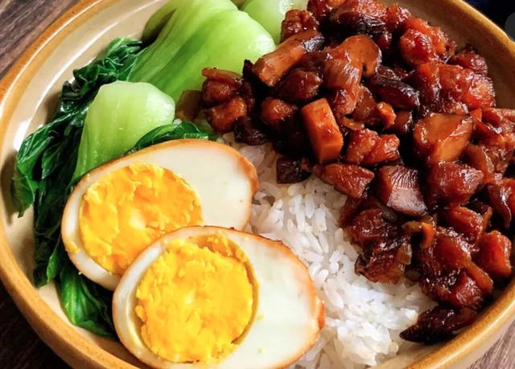

Braised Pork Rice

Fry sliced shallots in oil until crispy (skip this step if using shop-bought version). Cook hard-boiled eggs over another burner at the same time.
Fry pork belly strips (without oil) until slightly golden then add aromatics, seasonings, fried shallots, shiitake mushroom, eggs and water. Leave to simmer until tender.
While waiting, cook rice and blanch green vegetable of your choice. Assemble the bowl once the pork is done.